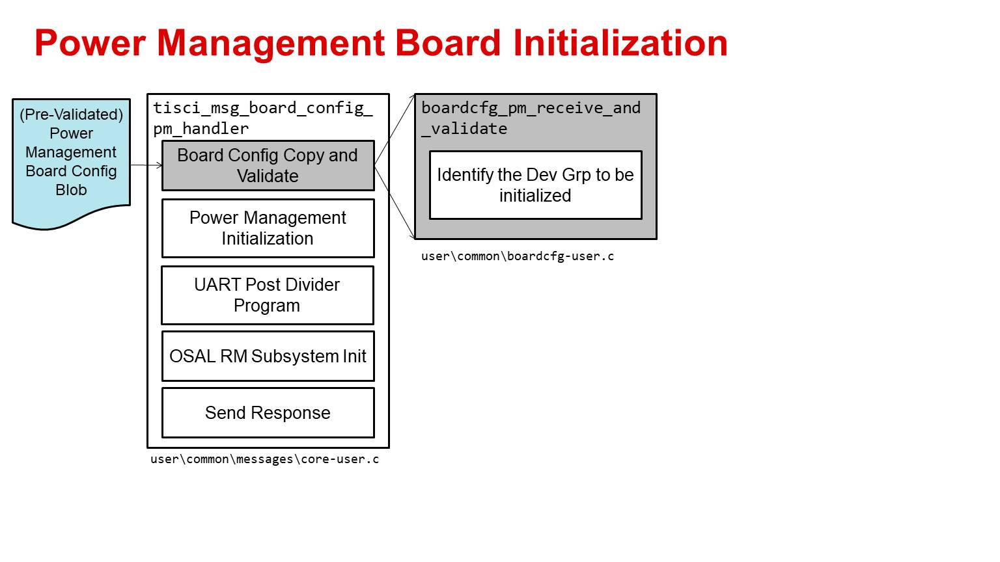
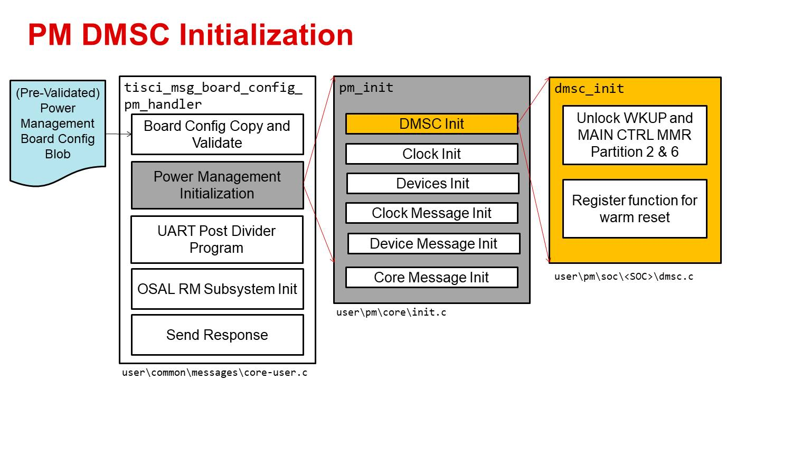
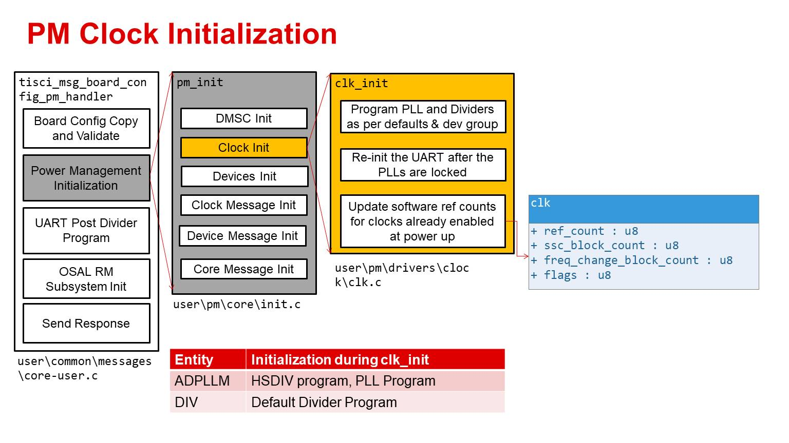
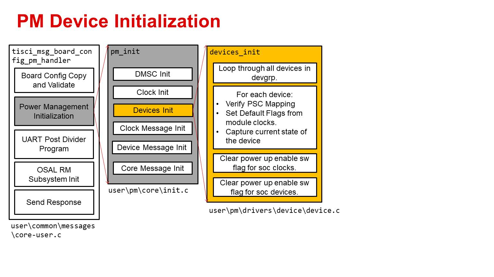

Power Management Board Configuration¶
Introduction¶
The PM board configuration message initializes the PM subsystem. The PM subsystem is not considered functional until after the PM board configuration message is received by DMSC. The PM board configuration data can be sent any time after the standard boardcfg message (Configuration substructure enumeration) is received.
The system remains in ROM configured PLL and clock configuration till this message is invoked. On invoking this call, the OFC associated with the SoC is configured. This implies that many of PLLs and clock tree will get reconfigured. The OFC settings set by the PM board configuration is as given in AM6 PLL Defaults. Since the device is capable of deriving the clock from different supported input HFOSC frequencies, System Firmware reads the DEVSTAT to identify the HFOSC frequency and programs the PLLs and Dividers according to the input HFOSC to derive the Original Frequency Combination (OFC). The OFC is a fixed table built into the DMSC System Firmware. This is derived from silicon characterization data. The user is expected to ensure the device is first configured to this OFC frequency and then tweak specific device clock frequencies based on their usecase needs by using the PM messages for TISCI_MSG_SET_FREQ and TISCI_MSG_SET_CLOCK_PARENT.
It is strongly recommended for proper care to be taken for key peripherals that may be operational and communicating external to SoC. For example, depending on the SoC and product, pinmux can be used to move the IP’s pins into isolation to prevent glitch events from being exported from the IP at the point of reconfiguration of PLLs system wide to the official OFC configuration.
Device Groups for Power Management Board Configuration¶
The PM board configuration TISCI message allows the user to specify the DEVGRP under which the PM subsystem operates. A specified DEVGRP defines which PM driver instances are capable of usage by the host applications. The host application can implement PM subsystem DEVGRP usage by sending a TISCI_MSG_PM_BOARD_CONFIG_PM message with the boardcfg_pm_devgrp parameter populated with one or more SoC-specific device group values. The DEVGRP value specifying whole device is mapped to zero so existing PM board configurations not explicitly defining a DEVGRP for the boardcfg_pm_devgrp parameter will be backwards compatible.
DEVGRPS are cumulative so if multiple PM board configurations are received, each with a unique DEVGRP defined, all received DEVGRPs will be active. To support accumulation of DEVGRPs the PM board configuration message can be sent any number of times.
TISCI API for Power Management Board Config¶
The following are the parameters required in the TI-SCI message to pass power management board configuration data to DMSC after DMSC sends boot notification complete. The PM board configuration message is not dependent on receipt of the standard board configuration message.
Usage¶
| Message Type | Normal |
| Secure Queue Only? | No |
TISCI Message ID¶
TISCI_MSG_BOARD_CONFIG_PM (0x000EU)
Message Data Structures¶
struct tisci_msg_board_config_pm_req
TISCI_MSG_BOARD_CONFIG_PM request to provide the location and size of the boardcfg Power Management configuration structure.
| Parameter | Type | Description |
|---|---|---|
| hdr | struct tisci_header | TISCI header |
| boardcfg_pmp_low | u32 | Low 32-bits of physical pointer to boardcfg PM configuration struct. |
| boardcfg_pmp_high | u32 | High 32-bits of physical pointer to boardcfg PM configuration struct. |
| boardcfg_pm_size | u16 | Size of PM configuration data. |
| boardcfg_pm_devgrp | devgrp_t | Device group for the PM configuration |
struct tisci_msg_board_config_pm_resp
Empty response for TISCI_MSG_BOARD_CONFIG_PM.
| Parameter | Type | Description |
|---|---|---|
| hdr | struct tisci_header | TISCI header. |
Although this message is essentially empty and contains only a header a full data structure is created for consistency in implementation.
boardcfg_pm structure¶
This is a fixed size c-structure which both defines the format of the configuration as well as reserves DMSC memory to store the configuration. However, the boardcfg_pm data structure is currently empty.
Warning
Although currently empty, in order to properly initialize the PM subsystem this message must still be sent with the address and size parameters all configured to 0.
Note
Although currently empty, PM Board configuration requires to be signed and encrypted on HS devices to ensure authenticity and protect secrets. Please refer to Signing Board Configuration on HS devices on how to sign and encrypt board configuration on HS devices.
Power Management Initialization after receiving board configuration¶
Once the PM board configuration message is received by the System Firmware, it performs the following operations:
Board Configuration Receive and Validate¶
The first step after receiving the board configuration by the tisci_msg_board_config_pm_handler is to identify which DEVGRP the message is for.
PM Initialization - DMSC Init¶
The next step of the tisci_msg_board_config_pm_handler is to perform the PM initialization. This involves multiple steps starting with DMSC initialization. The DMSC initialization involves unlocking the WKUP and MAIN CTRL MMRs. This is SoC specific.
PM Initialization - Clock Init¶
The next step of the tisci_msg_board_config_pm_handler is to perform the clock initialization. As part of this step the code initializes the PLLs and dividers as per the OFC for the input device group. The UART is re-initialized after the PLL is locked. The software reference counts for the clocks initialized at power up is updated.
The Clock init initialization sequence is as below:
PM Initialization - Device Init¶
The next step of the tisci_msg_board_config_pm_handler is to perform the device initialization. As part of this step the code loops through all the devices in the devgrp. For each device the PSC connection is verified and the current state of the device PSC is captured. The module clock default flags are initialized in this function. After this the API clears the software state of the modules and clocks enabled at power up.
The Device init initialization sequence is as below:
PM Initialization - Clock Messages Init¶
The next step of the tisci_msg_board_config_pm_handler is to register the software handler for the
- TISCI_MSG_SET_CLOCK message
- TISCI_MSG_GET_CLOCK message
- TISCI_MSG_SET_CLOCK_PARENT message
- TISCI_MSG_GET_CLOCK_PARENT message
- TISCI_MSG_GET_NUM_CLOCK_PARENTS message
- TISCI_MSG_SET_FREQ message
- TISCI_MSG_QUERY_FREQ message
- TISCI_MSG_GET_FREQ message
PM Initialization - Device Messages Init¶
The next step of the tisci_msg_board_config_pm_handler is to register the software handler for the
- TISCI_MSG_SET_DEVICE message
- TISCI_MSG_GET_DEVICE message
- TISCI_MSG_SET_DEVICE_RESETS message
PM Initialization - Core Messages Init¶
The next step of the tisci_msg_board_config_pm_handler is to register the software handler for the
- TISCI_MSG_SYS_RESET message
OSAL PM Subsystem Init¶
The UART clock dividers are re-programmed to make sure the UART logging function is still available from the system firmware after the PLLs are re-initialized.
This is the last step in tisci_msg_board_config_pm_handler where the software state is updated to reflect the power management is initialized and now can accept power management messages.
After this step the host response is sent. If for any reason any of the above steps fail the API would return with a NACK.